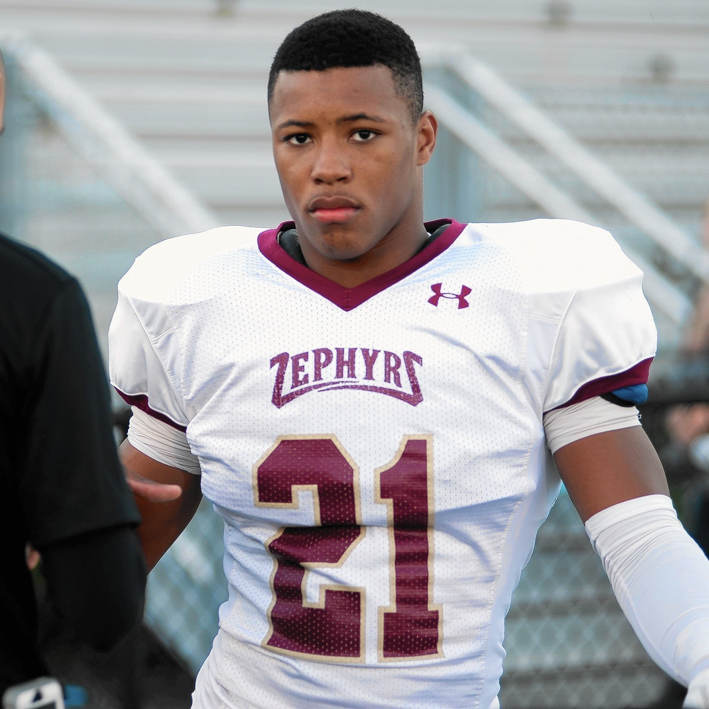
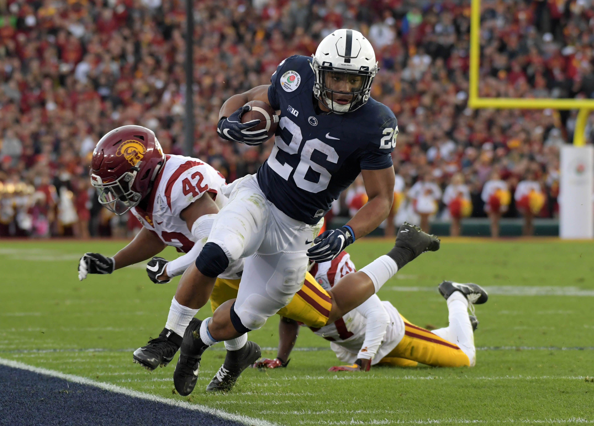
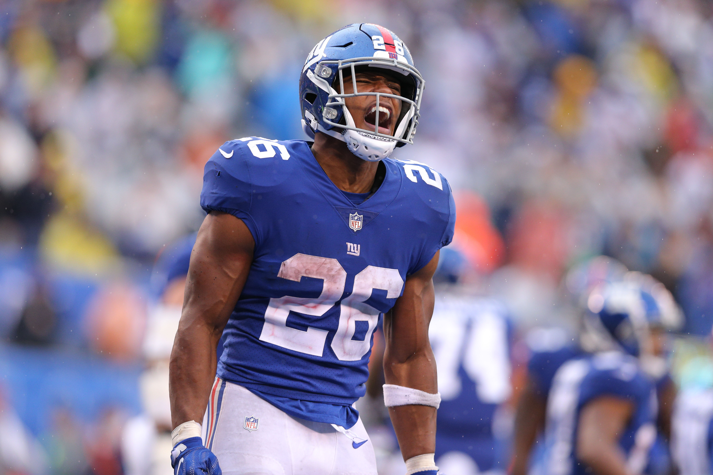

Saquon attended Whitehall Highschool.
Saquon attended Penn State.
Saquon was regarded as the number one runningback from his class after his illustrious college career - some even considered him the number one prospet overall.
Saquon was drafted 2nd overall by the New York Giants in 2018.
Saquon led the league in scrimmage yards as a rookie with 2,028: 1,307 rushing and 721 receiving.